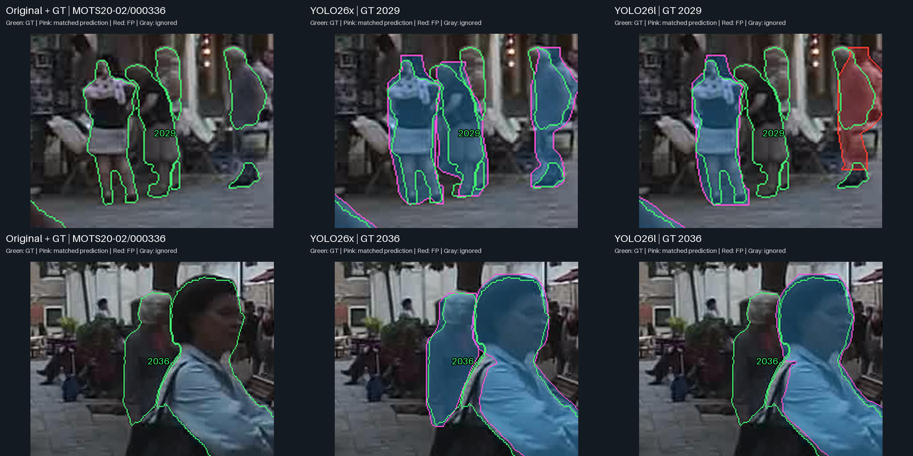
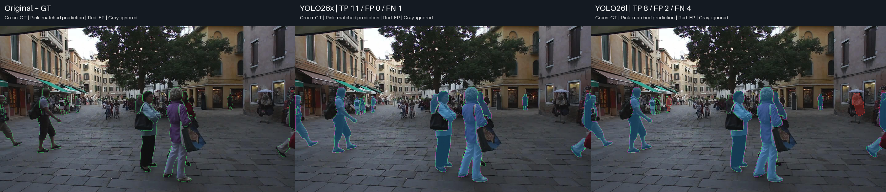
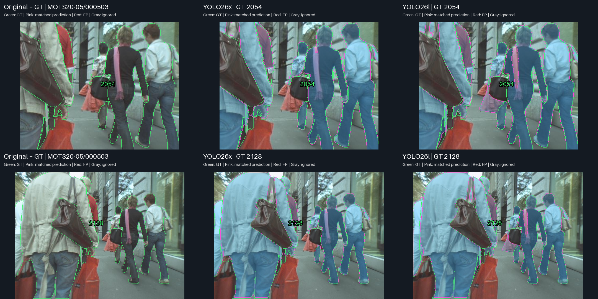
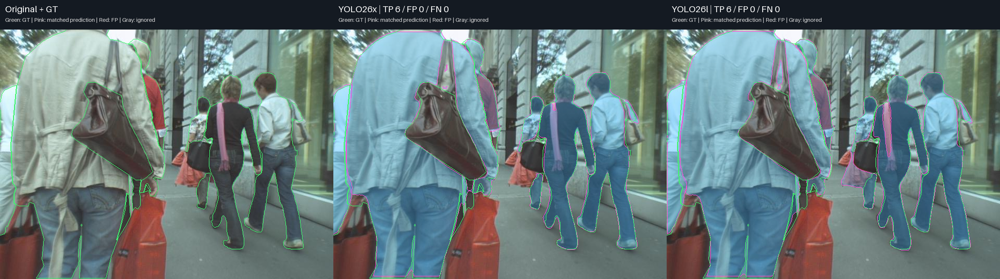
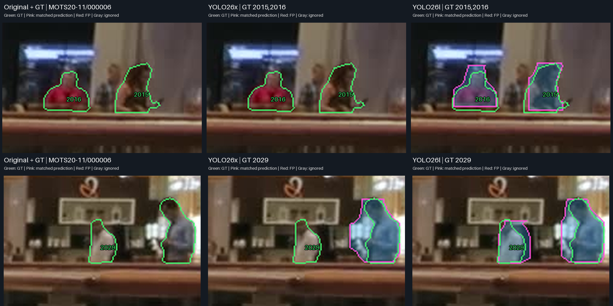
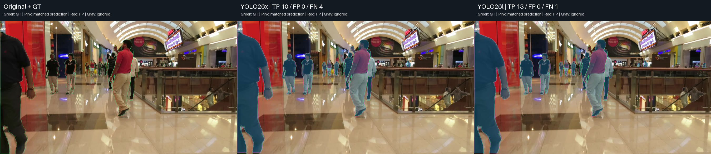
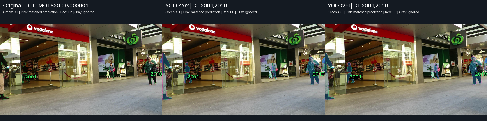
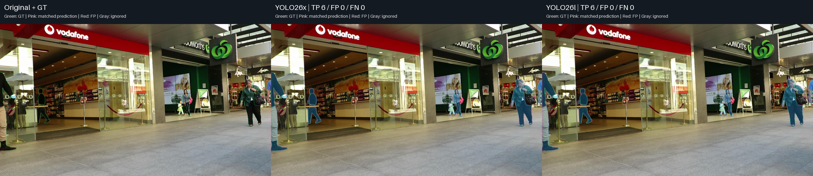
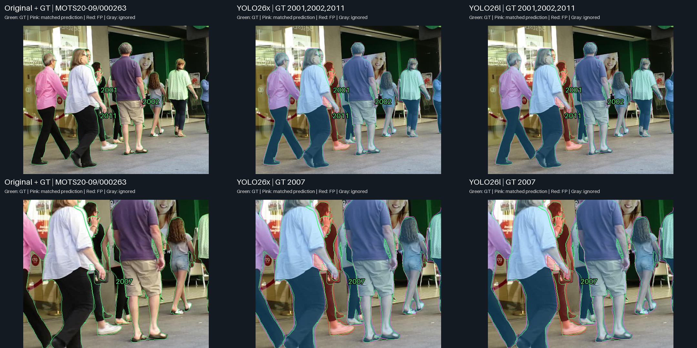
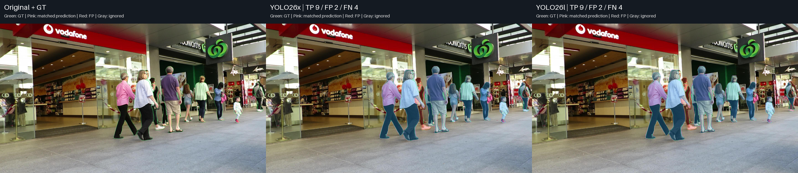

5 cases จาก saved predictions · ไม่มี inference ใหม่ · confidence 0.25 / mask IoU 0.50 · คลิกภาพเพื่อดูไฟล์ขนาดเต็ม
เขียว = GT · ชมพู = matched prediction · แดง = FP · เทา = ignored
MOTS20-02/000336 · เลือกจากเฟรมที่ TP ของ x มากกว่า l ถึง 3 โดยไม่เพิ่ม FP; ภาพขยายเน้น GT 2029 และ 2036 เพื่อเห็นผลของ confidence ที่ใช้จริง
ซ้าย: Original + GT · กลาง: YOLO26x · ขวา: YOLO26l


Interpretation: ตัวอย่างนี้แสดงข้อได้เปรียบของ x ที่ operating point เดิม ซึ่งเกี่ยวกับคะแนน confidence ด้วย ไม่ใช่เพียงรูปทรง mask หากงานยอมให้คนที่ confidence ต่ำหายไปไม่ได้ กรณีนี้เป็นเหตุผลให้ตรวจ x เพิ่ม แต่ยังไม่พิสูจน์ว่าลด threshold ของ l แล้วจะมี Recall/Precision ที่ดีกว่าเดิม ต้องประเมิน matching และ FP แยกถ้าจะปรับ threshold
MOTS20-05/000503 · เลือกจากเฟรมที่ TP/FP/FN เท่ากันและ valid GT ครบทั้งสองโมเดล เพื่อเทียบ mask ของคนเดียวกันโดยไม่ปนความต่างจากคนที่ match ได้
ซ้าย: Original + GT · กลาง: YOLO26x · ขวา: YOLO26l


Interpretation: เคสนี้เป็น pain point ของการเอา mask ไปตัดคนออกจากภาพ: แม้ Recall เท่ากัน แต่พื้นที่ที่ติดมากับ mask ต่างกันมากใน GT 2054 และ IoU ของ x ผ่าน 0.75 ขณะที่ l ไม่ผ่านสำหรับคนนี้ อย่างไรก็ตาม l ทำได้ดีกว่าใน GT 2128 ไม่ควรสรุปว่าขอบของ x ดีกว่าทุกคนจากภาพนี้
MOTS20-11/000006 · เลือก counterexample ที่ l มี TP มากกว่า x ถึง 3 และ FP เท่ากัน เพื่อไม่คัดเฉพาะภาพที่ x ชนะ
ซ้าย: Original + GT · กลาง: YOLO26x · ขวา: YOLO26l


Interpretation: ความแม่นยำรวมที่สูงกว่าไม่ได้รับประกันว่า x จะได้ TP มากกว่าทุกเฟรม ตัวอย่างนี้แสดงว่า confidence ของแต่ละ checkpoint อาจให้ผลต่างกันที่ threshold เดียวกัน โดยมีคนที่ l นำ mask มาใช้ได้แต่ x ยังไม่ผ่าน threshold
MOTS20-09/000001 · เลือกภาพที่ valid GT ครบทั้งคู่เพื่อให้เห็นกรณีที่ผู้ใช้แทบไม่เห็นประโยชน์เพิ่มจาก x ในภาพรวม
ซ้าย: Original + GT · กลาง: YOLO26x · ขวา: YOLO26l


Interpretation: ในภาพลักษณะนี้การเพิ่มขนาดอาจให้ผลที่เห็นเพิ่มเพียงเล็กน้อย หากงานเน้น throughput และผลของ l เพียงพอ กรณีนี้สนับสนุนให้พิจารณา l แต่ไม่ใช่หลักฐานว่าทั้งคู่เท่ากันทุกภาพ
MOTS20-09/000263 · เลือก shared failure anchor เพื่อแสดงข้อจำกัดที่เปลี่ยนจาก l ไป x ก็ยังไม่แก้ในตัวอย่างนี้
ซ้าย: Original + GT · กลาง: YOLO26x · ขวา: YOLO26l


Interpretation: หากปัญหาหลักเป็นการแยก instances ในบริเวณคนซ้อนกัน การเพิ่มขนาดอย่างเดียวไม่ได้รับประกันว่าปัญหาจะหาย เคสนี้จึงเป็นข้อจำกัดที่ควรถือไปทดสอบต่อทั้งสองรุ่น
ภาพคัดเพื่อวินิจฉัย ไม่ใช่ representative sampling, statistical significance หรือ final CCTV suitability ดูรายละเอียดทั้งหมดใน YOLO26X_VS_YOLO26L_VISUAL_TH.md